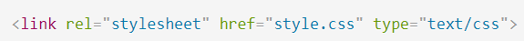

Практическая работа № 3
Основы HTML
Основы HTML содержат основные правила языка HTML, описание структуры HTML-страницы, отношения в структуре HTML-документа между HTML-элементами.
HTML-документ — это обычный текстовый документ, может быть создан как в обычном текстовом редакторе (Блокнот), так и в специализированном, с подсветкой кода (Notepad++, Visual Studio Code и т.п.). HTML-документ имеет расширение .html.
HTML-документ состоит из дерева HTML-элементов и текста. Каждый элемент обозначается в исходном документе начальным (открывающим) и конечным (закрывающим) тегом (за редким исключением).
Содержание:
Структура HTML-документа
Язык HTML следует правилам, которые содержатся в файле объявления типа документа (Document Type Definition, или DTD). DTD представляет собой XML-документ, определяющий, какие элементы, атрибуты и их значения действительны для конкретного типа HTML. Для каждой версии HTML есть свой DTD.

Элементы, находящиеся внутри элемента <html>, образуют дерево документа, так называемую объектную модель документа, DOM (document object model). При этом элемент <html> является корневым элементом.

Чтобы разобраться во взаимодействии элементов веб-страницы, необходимо рассмотреть так называемые «родственные отношения» между элементами. Отношения между множественными вложенными элементами подразделяются на родительские, дочерние и сестринские.
- Предок — элемент, который заключает в себе другие элементы. На рисунке 1 предком для всех элементов является <html>. В то же время элемент <body> является предком для всех содержащихся в нем элементов: <h1>, <p>, <span>, <nav> и т.д.
- Потомок — элемент, расположенный внутри одного или более типов элементов. Например, <body> является потомком <html>, а элемент <p> является потомком одновременно для <body> и <html>.
- Родительский элемент — элемент, связанный с другими элементами более низкого уровня, и находящийся на дереве выше их. На рисунке 1 <html> является родительским только для <head> и <body>. Элемент <p> является родительским только для <span>.
- Дочерний элемент — элемент, непосредственно подчиненный другому элементу более высокого уровня. На рисунке 1 только элементы <h1>, <h2>, <p> и <nav> являются дочерними по отношению к <body>.
- Сестринский элемент — элемент, имеющий общий родительский элемент с рассматриваемым, так называемые элементы одного уровня. На рисунке 1 <head> и <body> — элементы одного уровня, так же как и элементы <head>, <h2> и <p> являются между собой сестринскими.
Элемент <html>
Является корневым элементом документа. Все остальные элементы содержатся внутри <html>...</html>. Все, что находится за пределами элемента, не воспринимается браузером как HTML-код и никак им не обрабатывается.
Элемент <head>
Раздел <head>...</head> содержит техническую информацию о странице: заголовок, описание, ключевые слова для поисковых машин, кодировку и т.д. Введенная в нем информация не отображается в окне браузера, однако содержит данные, которые указывают браузеру, как следует обрабатывать страницу.
Элемент <title>
Обязательным элементом раздела <head> является <title>. Текст, размещенный внутри элемента <title>, отображается в строке заголовка веб-браузера.
Длина заголовка должна быть не более 60 символов, чтобы полностью поместиться в заголовке. Текст заголовка должен содержать максимально полное описание содержимого веб-страницы.
Элемент <meta>
Необязательным элементом раздела является элемент . С его помощью можно задать описание содержимого страницы и ключевые слова для поисковых машин, автора HTML-документа и прочие свойства метаданных.
Элемент может содержать несколько элементов , потому что в зависимости от используемых атрибутов они несут различную информацию.
Элемент <style>
Внутри этого элемента задаются стили, которые используются на странице. Для задания стилей в HTML-документе используется язык CSS. Таких элементов на странице может быть несколько.
Элемент может содержать код форматирования как самих элементов веб-страницы, так и веб-страницы целиком.
Элемент <link>
Задать стили для документа можно также при помощи другого способа — записать их в отдельный файл с расширением .css, например, style.css.
Подключить файл со стилями к веб-странице можно двумя способами:
Подключить файл со стилями к веб-странице можно двумя способами:
- через директиву @import url
- с использованием элемента <link>. Данный способ является предпочтительным.

Элемент определяет отношение между текущей страницей и другими документами. Таких элементов на странице может быть несколько.
Элемент <script>
Элемент script позволяет присоединять к документу различные сценарии. Текст сценария может располагаться либо внутри этого элемента, либо во внешнем файле. Если текст сценария расположен во внешнем файле, то он подключается с помощью атрибутов элемента.
Элемент <body>
В разделе body располагается все содержимое документа.
Наверх